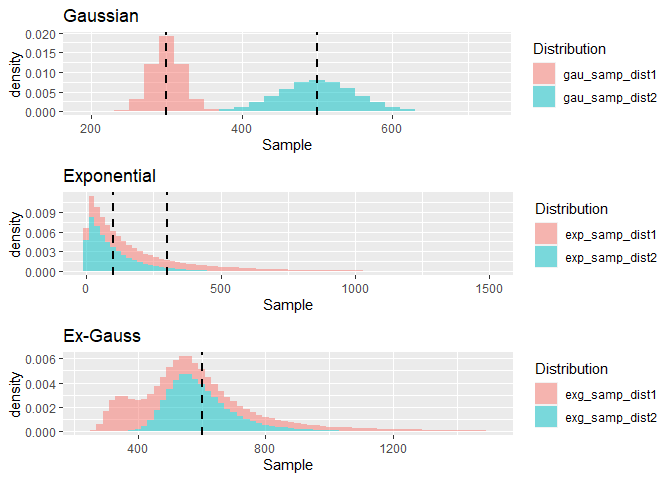
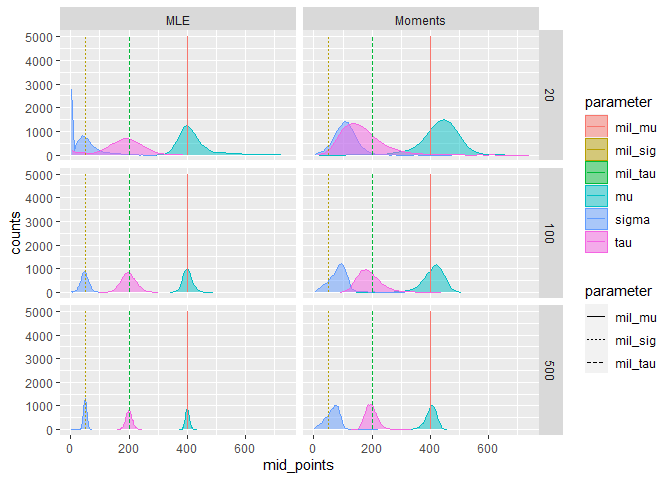
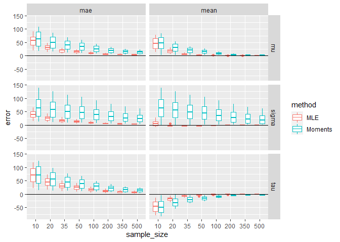
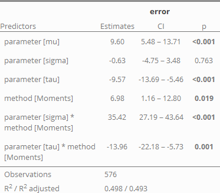
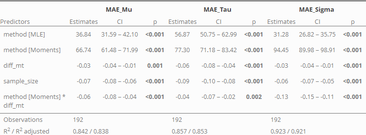
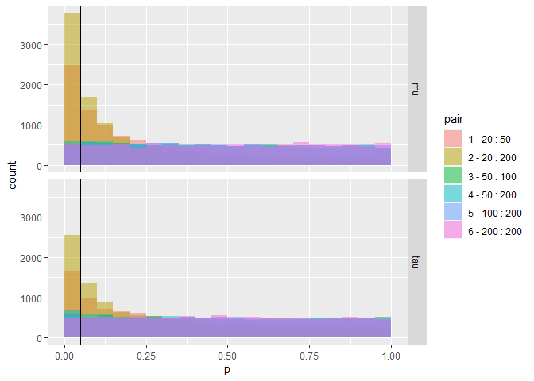

The (not so) easy task of analyzing reaction times.
This is the non-interactive Version of the analysis! You can find the interactive notebook here, caution it’s about 7MB in size, so not your average website!
All code can be found in rmarkdown documents on Github https://github.com/SRSteinkamp/ReactionTimeWrangling/exgauss
Analyzing reaction times has a long history in psychology and (cognitive) neuroscience. Most people who studied Psychology in university have conducted classical psychological experiments. For example investigating the Stroop task. You might have encountered the stimuli, with the typical task to spell out loud as fast as possible written color names:
- \(\\color{red}{\\text{RED}}\)
- \(\\color{yellow}{\\text{BLUE}}\)
- \(\\color{blue}{\\text{YELLOW}}\)
- \(\\color{green}{\\text{GREEN}}\)
After running such a task, with many more word-color pairs and different participants, a typical question in undergrad might be: Are participants significantly faster while reading matching color words (\(\\color{green}{\\text{GREEN}}\)) than reading non-matching color words (\(\\color{blue}{\\text{GREEN}}\))? A straightforward answer would be to average the reaction times in the non-matching and matching conditions for each participant and then compare the two conditions using for example a paired t-test. Yes, if p < 0.05 and no, if p > 0.05.
Results are in and everything is fine? If you start wondering whether this is the correct way of analysis, you might find more and more and is more. Different discussions about:
- Should conditions across participants be averaged using the mean or the median?
- Should data be averaged at all?
- How to define outliers?
- …
- Could a drift-diffusion model provide the key insights?
- …
- Is null hypothesis significance testing meaningful?
All of these questions are not really in my main field of expertise (no worries I won’t deal with the last one ;) , but I found reading about reaction time analyses weirdly entertaining and very interesting, and I wanted to start with blogging. So here is the first one of a couple of experiments I am planning to do. There is no particular order but all are based on some questions that arose while looking at different papers.
So maybe there is something useful here for you, or not. Or you disagree or have comments, suggestions, etc. please get in touch!
Here is the first part:
Part 1 - How many trials do I need to fit an Ex-Gauss?
Data below is generated sampling 100000 observations from two Ex-Gaussian distributions with μ = 300, σ = 20, τ = 300 (red) and μ = 500, σ = 50, τ = 100. Note, that both distributions have the same mean of 600 (the black dashed line). To the left the two components of the Ex-Gaussian are presented - the Gaussian and the Exponential distributions. Here again the dashed-lines describe the mean of the corresponding distributions. 
The Ex(ponential) Gauss(ian) distribution, is the sum of a Gaussian distribution parametrized by μ, and σ, which define the “body” of the distribution, with an Exponential function (τ) describing the skew to the right. The normally distributed body, with a long tail, has been found to closely match the distribution of reaction time data found in many experiments (Palmer et al. 2011). While the fit to experimental data seems to be ideal, the parameters itself do not seem to be related to any specific cognitive constructs. At least, the discussion is still ongoing (Spieler, Balota, and Faust 2000). The strength of fitting distributions to reaction times is seen in the ability to provide a finer description than for example a summary of a certain condition using the mean or the median. Different combinations of the Ex-Gauss parameters μ and τ, for example can lead to the same mean. So comparing two conditions for example might provide the same summary statistics, but the distributions might have a very different spread and skew.
If you are interested in checking out more distributions (and more about model fitting, etc.) visit this great page: https://lindeloev.github.io/shiny-rt/
This is just a quick introduction into why fitting a distribution might provide a better picture of reaction times, but how many trials are necessary per condition?
Methods
To simulate data I used the 12 Ex-Gauss distributions used by Miller (1988), and many others. My assumption is, that a researcher wants to fit an Ex-Gauss function for each condition and each participant in an experiment. Note that, there are ways to estimate distributions across multiple participants, which seem to be stable, even for small numbers of trials(Ratcliff 1979), which I am not (yet?) going into. One estimate is that around 100 trials might be needed to get reliable results (Ratcliff 1979).
Here I want to investigate how many trials are needed, and whether there are general biases in the estimation. For most of the analysis I am using the retimes package. Data is simulated using rexgauss and for model fitting using both the method of moments (mexgauss) and maximum likelihood estimation (MLE) timefit are used. According to the documentation timefit gets its starting parameters using the method of moments.
I am simulating data from the 12 distributions starting with 10 (maybe a rare-condition, like an oddball), up to 500 trials (a Psychophysicist’s dream (Palmer et al. 2011)). For each of the twelve distributions I sampled different numbers of trials (10, 20, 35, 50, 100, 200, 350, 500) and then estimated the three parameters μ, σ, τ using the method of moments and MLE. This process was repeated 10000 times.
| Distribution | Mu | Sigma | Tau |
|---|---|---|---|
| 1 | 300 | 20 | 300 |
| 2 | 300 | 50 | 300 |
| 3 | 350 | 20 | 250 |
| 4 | 350 | 50 | 250 |
| 5 | 400 | 20 | 200 |
| 6 | 400 | 50 | 200 |
| 7 | 450 | 20 | 150 |
| 8 | 450 | 50 | 150 |
| 9 | 500 | 20 | 100 |
| 10 | 500 | 50 | 100 |
| 11 | 550 | 20 | 50 |
| 12 | 550 | 50 | 50 |
Results
The histograms below describe our simulation results. Feel free to click around (in the interactive version) and select different distributions and methods. From our visual inspection we can see that using a small number of trials can lead to quite some biases in the estimated parameters. The spread of estimated parameters decreases the more samples are considered. The data in the histograms is filtered to only include parameter estimates greater than 0 and less than 750. The histograms are calculated so that 40 bins for each sample are estimated and only for sample sizes of 20, 100, 500). This might not be the best way to display the data, but was done to keep the size of the HTML as small as possible. Furthermore, some data cleaning had to be performed as there are raw-events with very unlikely parameter estimates. In the non-interactive version, there estimates for distribution 6 only, however you can see Moments and MLE side by side.
Interactive Version Legend
I couldn’t figure out how to put meaningful legends on the interactive version: * red estimates for μ, solid bars distribution μ * blue estimates for τ, dotted bars distribution τ * green estimates for σ, dashed bars distribution σ  To get an estimate of how well (or bad) the modeling performed, I calculated the mean error to investigate general trends, its standard-deviation (SD), and the mean absolute error for error estimation (MAE).
There is unfortunately, too much data to have good look at, so here is a datatable to play around with and investigate some of the summary values (in the interactive version only). Data can be created using the .Rmd files in the Repro
Analysis
Plotting the summaries for the estimations and pooling over distributions, we can draw first (maybe obvious) conclusions:
- larger sample sizes, lead to less error
- maximum likelihood estimation performs generally better, than the method of moments.
Interestingly, regardless of estimation procedure, the σ and μ parameters seem to be overestimated, whereas τ is underestimated.

Statistical Summary
How strong are the observed biases?
 As we have already seen in the figure, we confirm that μ is generally overestimated while, τ is underestimated. This makes sense given the distribution of the data: The majority of data will be sampled from the Gaussian part of the distribution, so extreme-values are relatively rare. It is therefore much harder to correctly estimate the skew (τ). As the mean of the Ex-Gaussian is given by μ + τ, a underestimation of τ automatically leads to a larger estimate of μ.
Also, the method of moments seems to be more prone to biases, especially leading to an overestimation of σ.
What can we learn about the error?

All factors which were included in the model appear to have some meaning (are significant). As we have seen in the other analysis, the method of moments has a higher base MAE rate than the maximum likelihood estimation. Furthermore, we can see that μ and τ are easier identifiable the farther they are apart, especially when the method of moments is used. This is expressed by the regressor diff_mt = μ − τ (based on the original distributions). And again: larger sample sizes are the key factor to reduce the error!
Conclusion
If you want to get a good estimate of the reaction time distribution: collect enough data!
To provide a bit more nuance, you can get away with small sample sizes, if you are lucky. For example if the reaction time distribution isn’t very skewed. But keep in mind, that you can expect a higher error in the estimation of the true parameters (especially using the method of moments), when τ and μ are close to each other. Looking at the histograms, we also see that there is a lot of variance in the estimation of σ. So further analyzing σ, for example in a group analysis, should be done very carefully. Last but not least, sample sizes should be equal when comparing μ and τ across different conditions! Even if parameters are drawn from the same Ex-Gauss distribution, it is very likely that the condition with fewer trials will have a higher estimate of these parameters. We can do a small simulation of this using our simulated data.
Type 1 error due to imbalanced sample sizes
For simplicity, I decided to only use samples from distribution 6 (with μ = 400, τ = 200, and σ = 50), estimated by MLE. I am drawing 30 random sets of estimated parameters for different combinations of sample sizes. The number 30 is quite arbitrary but is supposed to reflect a typical number of participants in a reaction time experiment. The parameters of the different distributions are then submitted to a paired two-sided t-test and the number of significant results (p < 0.05) are reported. In theory, as data is drawn from the same distribution, we should expect around 5% false positive results.
Histogram of the simulation results. We can see that the first two pairs have many false positives (p < 0.05, left of the black line). The later pairings on the other hand seem to have a rather uniform distribution of p-values (as we would expect). The pairings (e.g., 20 : 50) show on how many trials the parameters in condition 1 (20) and in condition 2 (50) were estimated. The paired t-tests were then calculated as condition 1 > condition 2. 
For completeness’ sake, I also calculated the average t-value for each of the pairing, next to the proportion of false positive results.
| Pairing | Mu_p | Mu_t | Tau_p | Tau_t |
|---|---|---|---|---|
| 1 - 20 : 50 | 0.248 | 1.406 | 0.166 | -1.065 |
| 2 - 20 : 200 | 0.378 | 1.762 | 0.256 | -1.407 |
| 3 - 50 : 100 | 0.053 | 0.289 | 0.057 | -0.293 |
| 4 - 50 : 200 | 0.060 | 0.434 | 0.068 | -0.408 |
| 5 - 100 : 200 | 0.049 | 0.142 | 0.056 | -0.092 |
| 6 - 200 : 200 | 0.050 | -0.009 | 0.051 | 0.005 |
As assumed, we have an inflation of false-positive t-tests when comparing estimates of Ex-Gauss parameters from the same distribution (but estimated using different sample-sizes). The larger the imbalance, the larger the false positive rate!
References
Miller, Jeff. 1988. “A Warning About Median Reaction Time.” Journal of Experimental Psychology: Human Perception and Performance 14 (3): 539–43. https://doi.org/10.1037/0096-1523.14.3.539.
Palmer, Evan M., Todd S. Horowitz, Antonio Torralba, and Jeremy M. Wolfe. 2011. “What Are the Shapes of Response Time Distributions in Visual Search?” Journal of Experimental Psychology: Human Perception and Performance 37 (1): 58–71. https://doi.org/10.1037/a0020747.
Ratcliff, Roger. 1979. “Group Reaction Time Distributions and an Analysis of Distribution Statistics.” Psychological Bulletin 86 (3): 446–61. https://doi.org/10.1037/0033-2909.86.3.446.
Spieler, Daniel H., David A. Balota, and Mark E. Faust. 2000. “Levels of Selective Attention Revealed Through Analyses of Response Time Distributions.” Journal of Experimental Psychology: Human Perception and Performance 26 (2): 506–26. https://doi.org/10.1037/0096-1523.26.2.506.